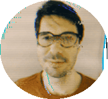

I’m Filip, a design researcher in London specialising in accessibility. I design with not just for people.
I work across diverse disability communities ::: people with learning disabilities, autistic people and adults living with aphasia post-stroke.
I started out as a service-designer in 2005. In a young enterprising NGO team we practised social-innovation every day. Collaborations with universities and agencies pulled me into research leading to a degree in Cog-Science.For eight years I've chased one thread: communication: Saying you’re in pain without speech. Watching when you can’t track the language. Staying informed when comprehension dips. Applying for gov-benefits in text-heavy, overwhelming systems.
Since 2024 I’ve used GenAI in my work - curious, but cautious and critical.
I’ve worn many hats: social scientist, cognitive scientist, social innovator, and interaction designer. My projects are not tech-deterministic; they live in messy, real-world contexts.

UX Design Researcher